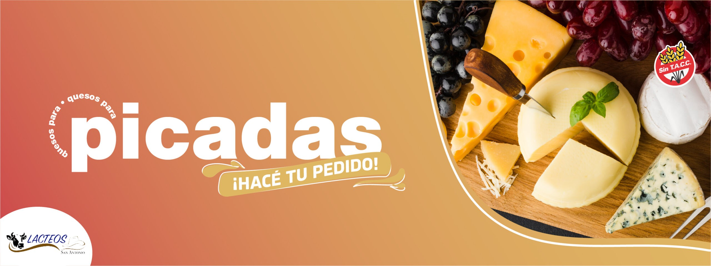

Holanda
Presentación en horma de 4 kg aprox.Es un queso semigraso con ojos brillantes producto de su delicado proceso de maduración, de aroma dulce suave y sabor muy agradable, delicado a la vista y al paladar. Conocido como queso de postre el holanda es también ideal para acompañar el desayuno la merienda, o también en la típica picada del fin de semana.

Fontina
Presentacion en horma de 4kg aprox.Es un queso semigraso que presenta algunos ojos bien diseminados y pequeñas exfolias, de color amarillo uniforme, de masa elástica y de sabor característico dulce picante atribuido a su proceso de maduración . Recomendado para picar y para picadas gourmet, es uno de los ingredientes principales de la fondue así como también de las salsas de cuatro quesos.
Saborizado de albahaca
Presentación en horma de 4,5 kg y 500gr. envasadas al vacio.Queso de pasta semidura, aroma suave limpio y agradable.Textura compacta y de consistencia elástica. Ideal para acompañar picadas con fiambres y/o embutidos fuertes.

Jade de pesto
Presentación de 4 kg.Queso de pasta dura y color verde que lo hace único en su categoría, perteneciente a la familia de los quesos especiales se destaca por un sabor y aroma equilibrado proveniente de las especias adicionadas de albahaca y ajo.Un verdadero toque de color verde en tus comidas.